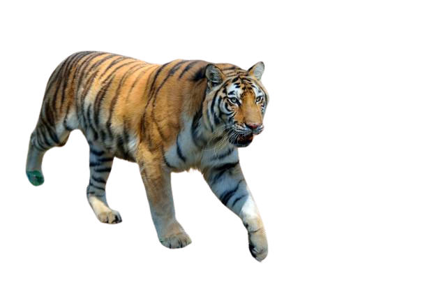

NATIONAL
TREASURES
At our 8th event, we welcome live guest
speakers form National Geographic.

At our 8th event, we welcome live guest
speakers form National Geographic.
Snow-dusted mounatains and caral reefs,
sweeping savennas and pristing national
parks:get immersed in the natural.
A national geographic
expert will accompany
each departure.